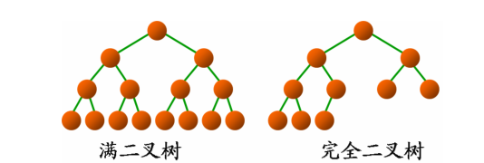
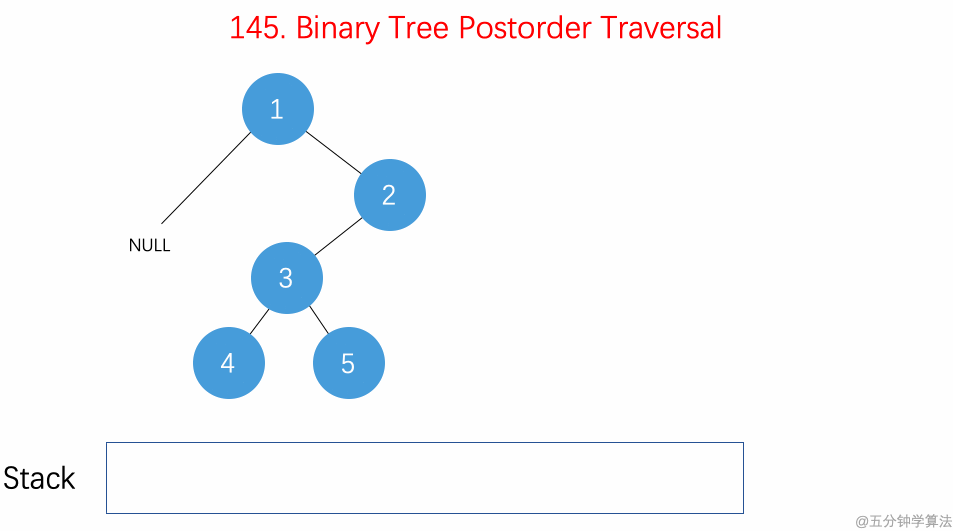

并不正经的前言
以前我这个小白看OI的书，老觉得有些东西很高端（看不懂的自然就很高端【滑稽】）：什么栈啊，位运算啊，二叉树啊。有些东西我学了之后也很迷糊（真的不是因为傻？），做题的时候总是可以把自己搞懵，更甚有题解也看不懂……为了让众多和我一样的小白了解高端的东西，于是就有了c++：论如何成功把自己搞懵这个系列。
bb了这么多废话 开始吧
什么是二叉树
什么是树
树是一种非线性的数据结构，能很好地描述有分支和层次特性的数据集合。
about 树

如上图，我们把红色的点称作结点（node），把最上方的结点叫做根结点，根结点下方的两个结构，我们称之为左子树和右子树（也可称为左孩子和右孩子）。我们把一个结点拥有的子树个数成为度，度为0的结点我们称为叶结点。我们把一棵树中所有结点层次的最大值叫做深度。如图的二叉树深度为4。
什么是二叉树
二叉树是一种特殊的树——即度为二的树。
二叉树的结点计算公式
在一个二叉树的第i层上，最多有2^(i-1)个结点。
深度为k的二叉树至多有(2^k)+1个结点。
二叉树的遍历
现在，请想象您正身处某二叉树的某一结点。想要知道这个二叉树的全貌，您必须遍历这个二叉树：一个个走遍这个二叉树的每一个结点，我们称之为遍历。有三种遍历方式：先序遍历，中序遍历，后序遍历。下面一图可以为您展示：
二叉树的前序遍历
代码实现二叉树